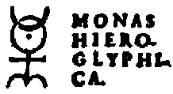

Tuesday, June the 21st, 2011
back to: title, date or indexes
I hesitate to tread into that realm where blogging and cupcakes collide, as it is territory where Brit at Think Of England stands proudly alone, far above the petty doings of mere mortals.
I do think it worth mentioning, however, that next month I shall be taking a trip to Mortlake, where I shall be served with a nice cup of tea accompanied by a cupcake emblazoned with the Monas Hieroglyphica of the Elizabethan magus Dr John Dee. See below, for the mystic symbol, if not the cupcake, which I assume has yet to be baked. A full report on this extremely sensible outing will follow in due course.
